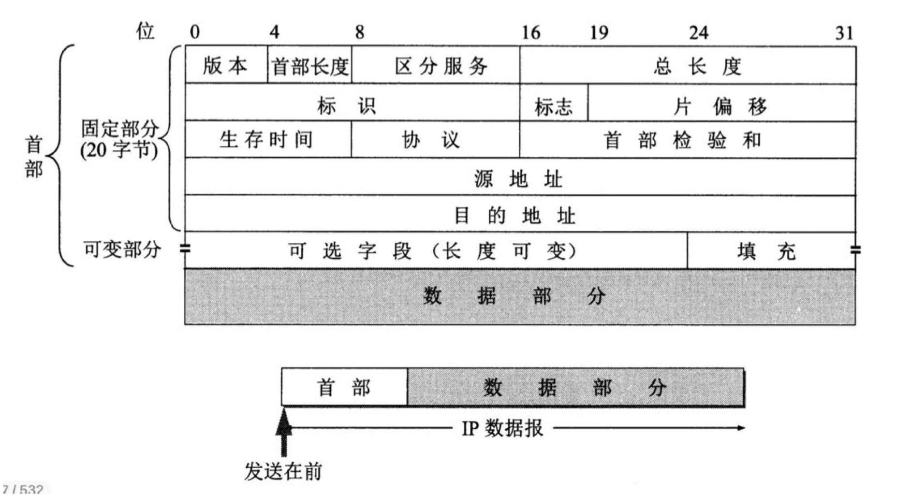

计算机网络 Lesson 8 [lesson-8][edit]
计算机网络 Lesson 8 [lesson-8][edit]
一个 IP 数据报由首部和数据两部分组成:
- 首部的前一部分是固定长度, 共 20 字节, 是所有 IP 数据报必须具有的.
- 在首部的固定部分的后面是一些可选字段, 其长度是可变的.

- 总长度. 占 16bit. 指首部和数据之和的长度, 单位为字节, 因此数据报的最大长度为 $2^{16}-1$ 65535 字节 (B).总长度必须不超过最大传送单元 MTU.
- 片偏移. 占 13bit. 指出较长的分组在分片后, 某片在原分组中的相对位置. 片偏移以 8 个字节 (8B) 为偏移单位.
- 标识. 占 16bit. 计数器, 每产生一个数据报就加 1, 当一个数据报的长度超过网络的 MTU 时, 必须分片, 每个数据报片都复制一次标识号, 以便重装成原来数据报. 属于同一个数据报各分片有相同的标识.
- 区分服务, 占 8bit. 用来获得更好的服务.在旧标准中叫做服务类型, 但实际上一直未被使用过.1998 年这个字段改名为区分服务. 只有在使用区分服务 [DiffServ] 时, 这个字段才起作用. 在一般的情况下都不使用这个字段.
- 标志. 占 3bit. 标志字段的最低位为
MF[More Fragment],MF=1表示后面还有分片,MF=0表示最后一个分片. 标志字段中间一位是 DF [Don’t Fragment], 只有当DF=0时才允许分片. - 生存时间 TTL. 占 8bit. 路由器在转发分组前, 先把 TTL 减 1. 若 TTL 被减为 0, 则该分组必须丢弃.
- 首部校验和. 占 16bit. 只校验分组的首部, 而不校验数据部分. 每经过一个路由器, 都重新计算.
$\textbf{Example.}$ 一个数据报长度为 4000 字节, 固定首部长度 20. 现在经过一个网络传送, 但 此网络能够传送的最大数据长度为 1500 字节. 试问应当划分为几个短些的数据报片? 各数据报片的数据字段长度、片偏移字段和 MF 标志应为何数值?
| 总长度 | MF | DF | 片偏移 | |
|---|---|---|---|---|
| 原始 | 4000 | 0 | 0 | 0 |
| 数据报片 1 | 1500 | 1 | 0 | 0 |
| 数据报片 2 | 1500 | 1 | 0 | 185 |
| 数据报片 3 | 1040 | 0 | 0 | 370 |
$4000 - 20 = 3980$, $3980 - 2 \times 1480 = 1020$.
$\textbf{Remark.}$ $185 = \frac{1500-20}{8} = 185$.
$\textbf{Example.}$ 数据报长度为 4800 字节. 网络能够传送的最大数据长度为 1420 字节.
| 总长度 | MF | DF | 片偏移 | |
|---|---|---|---|---|
| 原始 | 4800 | 0 | 0 | 0 |
| 数据报片 1 | 1420 | 1 | 0 | 0 |
| 数据报片 2 | 1420 | 1 | 0 | 175 |
| 数据报片 3 | 1420 | 1 | 0 | 350 |
| 数据报片 4 | 600 | 0 | 0 | 525 |
$4800-20 = 4780$, $4780 - 3 \times 1400 = 580$.
$\textbf{Remark.}$ IP 组转发分组流程.
- 从数据报的首部提取目的主机的 IP 地址 D, 得出目的网络地址 N.
- 若网络 N 与此路由器直接相连, 则把数据报直接交付给目的主机 D; 否则是间接交付, 执行步骤 3.
- 若路由表中有目的地址为 D 的特定主机路由, 则把数据报传送给路由表中所指明的下一跳路由器; 否则, 执行步骤 4.
- 若路由表中有到达网络 N 的路由, 则把数据报传送给路由表指明的下一跳路由器; 否则, 执行步骤 5.
- 若路由表中有一个默认路由, 则把数据报传送给路由表中所指明的默认路由器; 否则, 执行步骤 6.
- 报告转发分组出错 (ICMP).
$\textbf{Remark.}$ IP 转换 MAC.
- 得到下一跳路由器的 IP 地址后并不是直接将该地址填入待发送的数据报, 而是将该 IP 地址转换成 MAC 地址 (通过 ARP), 将其放到 MAC 帧首部中, 然后根据这个 MAC 地址找到下一跳路由器.
- 在不同网络中传送时, MAC 帧中的源地址和目的地址要发生变化, 但是网桥转发帧时, 不改变帧的源地址.
- 路由表并没有给分组指明到某个网络的完整路径. 路由表指出, 到某个网络应当先到某个路由器 (下一跳), 在到达以后, 继续查找路由表, 知道再下一步到哪个路由器.
子网掩码
- 目的: 使路由器知道 IP 地址是否使用了子网划分并且能快速知道子网号.
- 优点: 只要把子网掩码和 IP 地址逐位进行与运算, 可以得出网络地址. 主机号变了全 0.
网络地址 = IP & 子网掩码
$\textbf{Example.}$ IP 地址为 89.189.72.35, 子网掩码为 255.255.0.0, 则该 IP 地址中, 网络地址占前几位?
$\textbf{Remark.}$ $192 = 128 + 64$, $224 = 128 + 64 + 32$, 255.255.255.192 $\to 8 \times 3 + 2 = 26$.
见 网络类别 & IP 范围.
$\textbf{Example.}$ 可用地址总数
$$ (2^n-2)(2^{N-n}-2) $$
- $202.78.135.192 \to C \to N = 32 - 24 = 8$.
- $255.255.255.192 \to n = 2$.